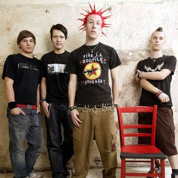
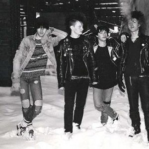
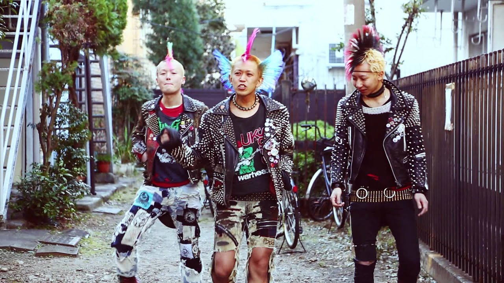

Punk mode för Dummies
Skatepunk
Skatepunk är en musikgenre so växte fram och blev stor på 90-talet. Musiken beskrivs som mycket energi, intensiv, snabb och melodisk. Namnet "Skatepunk" kom från att de som lyssnade på musiken och medlemmar i banden oftast åkte skateboard. Några populära skatepunk band är "Green Day", "Millencolin" och "Blink-128".
Låtförslag
- 1. Basketcase, Green Day
- 2. What's my age again, Blink-128
- 3. No Cigar, Millencolin
- 4. Rise Above, Black Flag
Trallpunk
Trallpunk är en svensk punkstil var musiken är snabb trumtakt, ofta polistiska (vänsterriktade) texter eller berättande och trallvnliga melodier. Trallpunken kom runt 1980/1990- talet. Olika trallband är "Charta 77", "Strebers" och "Asta Kask"
Topplista
- Balladen om lilla Elsa, Dia Psalma
- Snälla förklara, Charta 77
- Compatible, Skumdum
- Allting är skit..., De lyckliga kompisarna
Oi!
Oi kom redan under 1970-talet som spelades av band som "Cockney", "Sham 69" och "Rejects". Musiken har refränger som är lätta att sjunga/skrika/gorma med i och att sångaren använder sig av en grov brittisk dialekt.
Oi låtar
- If the kids are United, Sham 69
- Blask Szminki, The Analogs
- Oi! Oi! Oi!, Cockney Rejects
- S-H-A-R-P, Los Fastidios